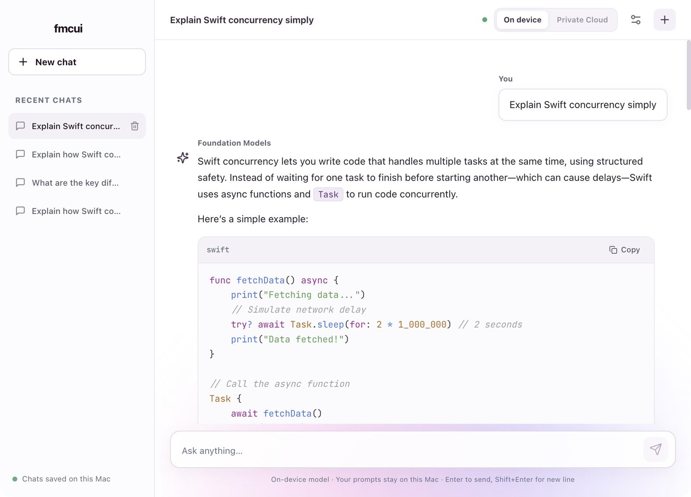
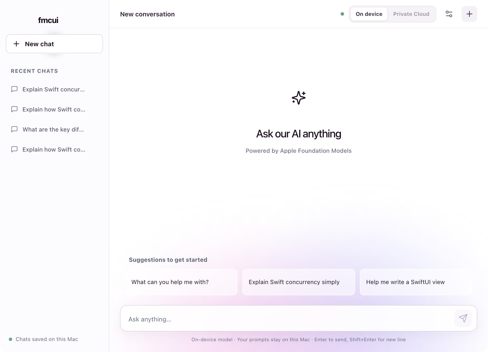

Private by default
On device is the default model. Your prompts stay on this Mac when you use it, and conversation history is saved locally.
Chat with Apple Foundation Models in a focused desktop app. Write, explore ideas, and work through code with an on-device model that keeps your prompts on your Mac.

A conversation in fmcui, running the on-device model.
From the first question to the next idea, the interface stays out of your way.
On device is the default model. Your prompts stay on this Mac when you use it, and conversation history is saved locally.
The composer moves to the bottom once a conversation begins, leaving a generous space to read and respond.
Streaming replies, readable Markdown, and copyable code blocks help you move from a question to something you can use.
Open a new chat and get a quiet canvas with a few ideas to get started. Pick up older conversations from the sidebar whenever you need them.
Private Cloud appears only when the Mac's fm server offers it. The app never switches an on-device chat to the cloud on its own.

fmcui runs on macOS 27 or later on a Mac with Apple Intelligence available.
View releases